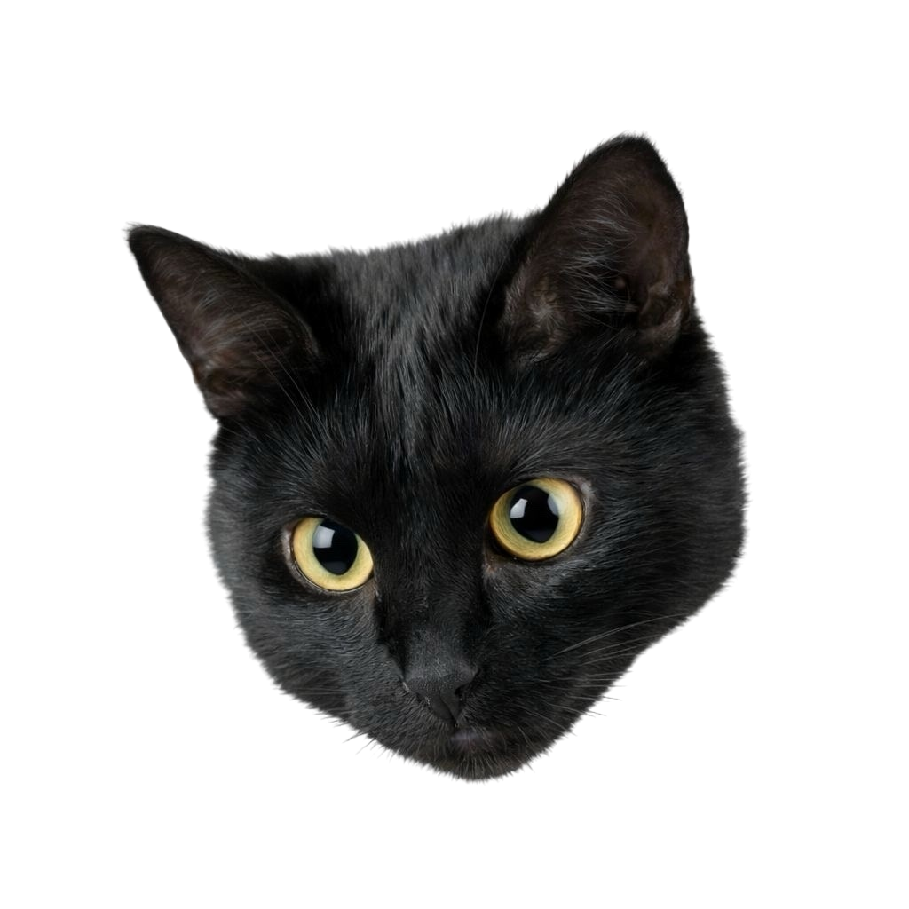

Семейство Нимравиды (Nimravidae)
Нимравиды — это вымершие хищники, которые внешне очень напоминали кошек. У них было мускулистое тело, короткие лапы и хвост — совсем как у современных представителей кошачьих.



Нимравиды — это вымершие хищники, которые внешне очень напоминали кошек. У них было мускулистое тело, короткие лапы и хвост — совсем как у современных представителей кошачьих.
/Род Диниктис (Dinictis)/Dinictis - ужасная куница.png)
Род Диниктис относится к семейству нимравид — древних хищников, внешне напоминавших кошек. Около 20–30 миллионов лет назад они охотились на землях современной Америки. Это были мускулистые звери метровой длины с мощными челюстями и пятипалыми когтистыми лапами. От других саблезубых кошек диниктис отличался наличием длинного хвоста и, вероятно, очень чувствительными длинными усами.
/Род Динайлур (Dinaelurus)/Динайлур.png)
Динайлур (Dinaelurus) — вымерший кошкоподобный хищник, обитавший на планете в период с 30 по 20 миллионов лет назад. Несмотря на принадлежность к «ложным саблезубым тиграм», он заметно выделялся на их фоне. У динайлура не было огромных клыков, характерных для его семейства: строением пасти он был гораздо ближе к современным пантерам, что делает его единственным и неповторимым представителем своего рода.
/Род Nimravus/Nimravus.png)
Нимравус — это древний хищник из семейства «ложных саблезубых тигров», обитавший в Северной Америке около 30 миллионов лет назад. При длине тела чуть более метра он внешне напоминал современного каракала. Однако были и отличия: его задние лапы были длиннее, а когти втягивались лишь частично, как у собак. Этот ловкий зверь предпочитал охотиться из засады на птиц и мелких животных, придерживаясь тактики современных кошек.
/Род Eusmilus/Eusmilus.png)
Эвсмил — один из самых впечатляющих представителей «ложных саблезубых тигров», обитавший в Северной Америке и Евразии миллионы лет назад. Своими размерами он напоминал леопарда, но достигал внушительных 2,5 метров в длину. Главным оружием хищника были огромные сабельные клыки. Чтобы эффективно их использовать, эвсмил мог раскрывать пасть на невероятные 90 градусов, а для защиты зубов на его нижней челюсти имелись специальные костные «ножны».
/Род Гоплофонеус (Hoplophoneus)/Гоплофонеус.png)
Гоплофонеус — древний хищник из семейства «ложных саблезубых кошек». Хотя он не был прямым предком современных кошачьих, внешне он очень на них походил: массивное мускулистое тело делало его таким же опасным, как и знаменитых саблезубых тигров. Уникальной чертой гоплофонеуса были два костяных выступа на нижней челюсти — особые «ножны», которые защищали его длинные и невероятно острые клыки.